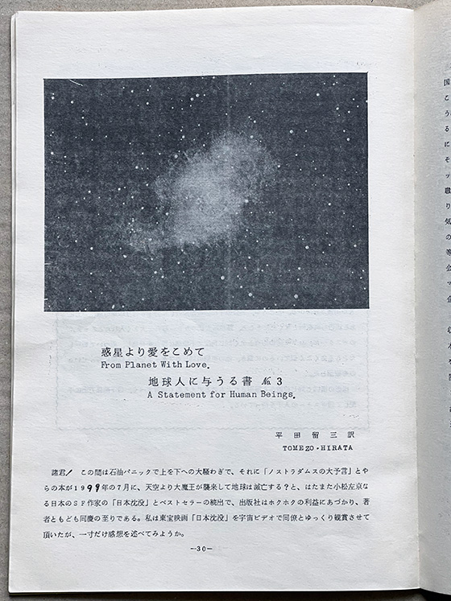
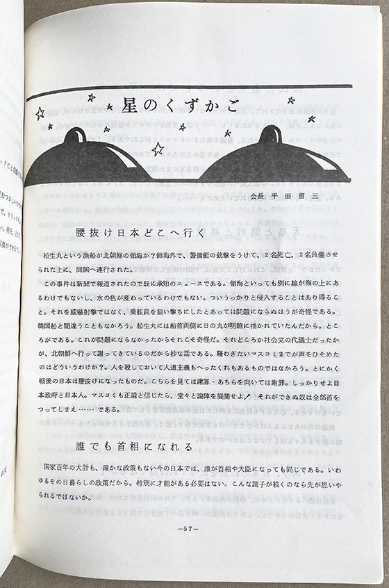
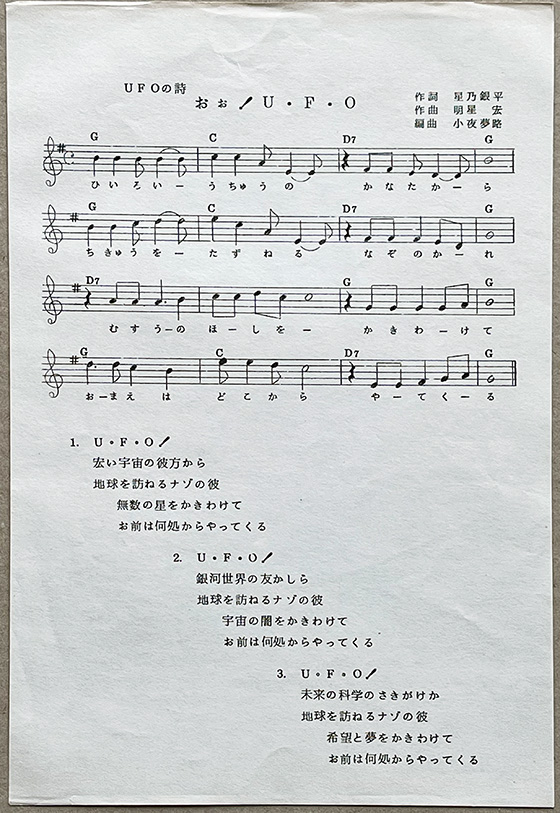

1970年代のUFOブームについて
70年代の日本UFO研究会について（2/2）
※この記事は2021年3月にブログに上げた記事の書き直しです。
さて、日本UFO研究会、とりわけその機関誌のバックナンバーを読んで影響されて自分は変わってしまい、UFOへの関心が薄れてしまったと告白するエッセイを同機関誌で発表したユーホロジストクラブ代表の平野氏なのですが、そんな日本UFO研究会、機関誌JUFORAとはどんなものだったのでしょうか。
もちろん、機関誌JUFORA は優れたUFO研究誌で、丹羽公三氏や入江重幸氏らによる海外のUFO事件記事（A.P.R.O.など）の紹介や、日本での目撃報告など多く研究記事が掲載されています。しかし一方で、平田留三氏自身によるエッセイがユニークな個性を放ってもいました。

例えば、「惑星より愛をこめて」という連載があります。これは宇宙人からの書簡という体裁を取っているらしく、「平田留三 訳」とあり、つまり多分、宇宙人からの書簡を宇宙語から日本語に平田氏が訳したという設定だと思うのですが、明らかに平田氏自身の考えをそのまま書いたものと思われます。この連載は、No.13号から開始しているようなのですが、僕は残念ながらNo.13号は持っていないので、No.14号の連載第２回の冒頭を下に引用してみたいと思います。
私は再び諸君にこの手紙を贈る光栄を喜んでいる。第１信の時よりも、諸君の地球世界はすべて悪化していることを、諸君自身が誰よりもご承知のことでし ょう。日本の為政者と財界人が先生と仰ぐ米国、そこのニクソン大統領のウォーター・ゲート事件は今や全米国をゆさぶっているし、彼の自己保身のためにした指揮権発動は、大統領の政治的地位さえゆさぶりだしたね。永い間つづいたベトナム戦争が、終結に近づくと中東方面で火の手が挙った。石油の欠乏から諸君たちはすでに生活に大きな影響を受けているだろう。諸君よく考え給えよ！ 地球の動力源は電気が無くなれば、すぺてが停電することを意味して いる。電気を得るためには巨量の石油を必要とすることは云うまでもない。トイレットペーバーの買だめに狂ったようにかけずり廻ったり、石ケンを積み上げて、これで何年分は大丈夫だ……なんてニンマリしている……（中略）
私はこの精神状態を私流に分析してみたが、何かのご参考となれば幸に思う。
１）日本人の血液中には、太平洋戦争下での極端なる生活物資の欠乏の苦しさが遺伝子として残っている。
２）商社の不法買だめによって、一部の物資が品不足となったり 、価格が上って困ったのは事実であり 、この警戒心がが非常に大きく強い。
３）土地などの高価なものには手が出ないが、紙やその他の安い物資ならかなり買える。
４）商社に困らされた腹いせと、自分もそれをして優越感にひたりたい……という願望がある。
５）日本の一部マスコミには、時代先取りのつもりで、オーパーに報道する ことがあり、マスコミを信用している国民はこれよりもまたさらに先見の明のつもりで、その先を考えるくせがある。
６）日本人は現在の政府を信頼していないこと。いまま でに期待を裏切られたり、だまされた経験からの 先入感が支配している。
等々である。これらの諸条件は日本人をして、デマや衝動に弱く自主的 ・冷静的な判断力に欠けることが判明した。日本UFO研究会機関誌JUFORA No.14 1974年7月発行 P.30-31
このテンポで「宇宙人」の書簡は続きます。例えば、ルパング島に30年も潜んでいた元日本兵小野田元少尉の救出を歓迎する日本のムードは異様であるとか、石油危機と便乗値上げ、さらに増税が国民を苦しめ、国民春闘という肩書きで行われるストライキでまた国民が困らされているといったことなどが、あくまで宇宙人目線として語られています。
「惑星より愛をこめて」は連載３回で終わり（第3回掲載No.15号は僕は非所蔵ですので実際は不明）、かわりに「わが人生に悔いあり——これから出発する人に贈る——」と題して、平田氏自身のそれまでの人生を綴って「何かの指針か参考ともなれば……」（日本UFO研究会機関誌JUFORA No.16 1975年6月発行 P.58）という主旨の連載がNo.16号から開始します。幼い頃の田舎の風景や、旅の思い出など、表題では「悔いあり」とおっしゃりつつも情緒ある思い出話が展開されています。

これと同じ時期に、「星のくずかご」と題したいわば長い編集後記のようなエッセイも開始されます。こちらのほうが、むしろ前述の「惑星より愛をこめて」に近いスタンスの続編エッセイかもしれません。やはり、政治や社会スキャンダルにもの申したり、あるいは週刊誌のゴシップ記事など読んで社会風俗を憎んだり羨んだり、といった雑多な内容のエッセイとなっています。例えば、No.18・19号の「星のくずかご」は以下のように始まっています。
ロッキード事件は真面目な国民を激怒させ、政治不信を印象づけてしまった。労組はストに続くス トで国民を困らせてしまった。国鉄と私鉄の何でも列車を止めるストは一体誰を目標 にしているのだ ろうか。医師優遇税制で、誰よりも税金を少なく納めている病院などが、脱税では筆頭になっているのは、どういうわけだろうか。フォークの歌手が書いたセックス小説が無罪になって、野坂昭如の 「四畳半何とか……」の小説が有罪になったとは何故だろうか。とにかく奇妙な私たちの日本だと思 いませんか。
日本UFO研究会機関誌JUFORA No.18・19 1976年8月発行 P.81
また、こうもあります。
またある週刊誌での話だが、40オそこそこの男が老婦人専門にセックスをする話が記録としてあった。80オの老婦人とまでアレをしたという。彼の体験談では、老婦人でも若い女性と少しも変らぬ快感がお互いにあり、老人福祉の考え方を変更する必要があると云っている。UFO研究誌にどうかとは思うが、一般のお上品な雑誌に堂々とセックス記事が掲載される世の中であってみれば、「JUFORA」の片隅みにこんな記事が少しぐらいあってを目に角をたてることもなかろう。私もそうだが、会員だってそうだろうと思う。UFOを研究するのと同時に人間であらねばいけない。UFOも大好きだがアノ方も大好きであって悪くはない。先に老婦人の話があったが、特異な話だとか異常セックスだと笑ってしまってはいけない気がする。
日本UFO研究会機関誌JUFORA No.18・19 1976年8月発行 P.84
この後、平田氏は相手の長所を見つけて交際するのが大切という自身の女性観を述べ、そこから、なぜか政府高官の汚職、芸能界のスキャンダル、広告費と芸能人の高額ギャラに言及し、「現在の社会でソドムとゴモラ的要因を構成しているのが、何と云っても政界と芸能界であると指摘すれば過言だろうか？」として、以下のように結んでいます。
甘くやわらかな筆致で進んできたのに、またしても硬い文章の羅列となってしまったので、今ひとたびの思いで話を元に戻したい。とにかく映画・テレビ・週刊誌などに登場する世界は虚構の世界であり、シンキローであるのだろうか？またそれはズームレンズ的な誇張の現実なのだろうか？
この世間知らず野郎！とか、時代遅れもいいとこだ！と失笑されたりすると思うとペンが進まないではないか。そうだったとしたらUFOならぬ勇敢な女性が私の眼前に出現したその時、私は現実として認めようと思っている。日本UFO研究会機関誌JUFORA No.18・19 1976年8月発行 P.86
ステレオタイプ化しすぎかも知れませんが、僕には、前回紹介したユーホロジストクラブ代表平野氏（当時おそらく30歳前後）と日本UFO研究会の代表平田氏（当時おそらく50歳前後？）が、まさにこの時代の若者と少し戦争経験のある年長者の世代的な気分を代表しているように感じられます。
かたや、内的な体験ではない戦争の歴史を自らへの糾弾として受け止めざるをえず、同時に戦争経験のある上の世代への負い目を感じることで、自己批判的であらねばと思う若い世代と、戦中戦後の抑圧された時期に青春をうばわれて、新しい時代の潮流にたいして憤慨を抱くと同時に、憧憬を感じ、尊重もせねばと感じる年長者世代という、当時の象徴的な2つの世代のギャップを見ることができるような気がします。
ユーホロジストクラブ代表平野氏の前述の決心は、このギャップの、無意識の読み取りから生まれたのかもしれません。
そして、逆にそれはある意味、そのような社会の中でUFOというのは、本当に超現実的で、この2つの世代で共有することが可能な、いわば心の安まる世界観だったということではないでしょうか。70年代のUFOブームにはそんな側面もある気がするのです。結論は、ただそれだけです。
ところで、前回の冒頭で取り上げた日本UFO研究会発売の「オォ！UFO」レコードはどのくらいヒットしたかはわからないのですが、おそらく、もともとは代表の平田氏自身が阪神録音社というレコード・PR映画制作会社を代表されていることから、見込み度外視で企画を立ち上げられたものと思われます。

No.18・19号の入江重幸氏のエッセイによると、入江氏ご自身でこの曲の編曲をつとめ、また同年（1976年）3月にNHKラジオのUFO特集番組の収録に出演され、UFOの話をされるとともに、レコードの宣伝のためにと、入江氏ご自身でこの歌のギター弾き語りをされたそうです（放送されたかどうかは未確認です）。
本当に、とてもユニークな研究会であったことがうかがえます。
今回は以上です。